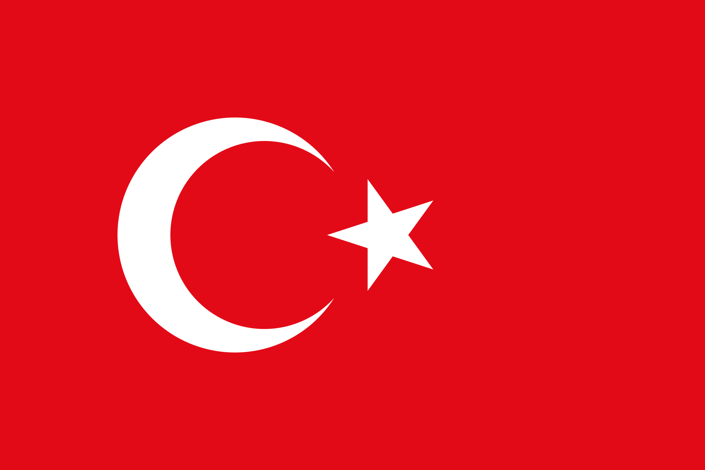

Middle Eastern Federation
| Middle Eastern Federation | |
|---|---|
 The Federation Flag | |
| Capital and largest city | Istanbul |
| State capitals | Ankara (Turkey); Van (Kurdistan) |
| Official languages | Turkish (federal); Kurdish, Arabic recognized in member states |
| Demonym | Federal |
| Government | Authoritarian federation |
| Head of State | Mustafa Iodinm |
| Legislature | Federal Council |
| Establishment | End of civil war 1923; constitution 1924 |
| Area | c. 780,000 km2 |
| Population | c. 14–16 million |
| Currency | Federal lira (customs union, 1926) |
| Time zone | Istanbul time (UTC+2) |
The Middle Eastern Federation (MEF), commonly called the Federation, is a country in western Asia with its capital in Istanbul. It comprises two member states, Turkey and Kurdistan, and is governed as an authoritarian federation under Head of State Mustafa Iodinm.
The Federation emerged from the Turkish Civil War of 1919–1923 as a third force opposed both to restoration of the Sultanate and to an exclusively Turkish national movement. The compact of 1924 guarantees the member states their own flags, administration, courts, schools and religious establishments in exchange for participation in common institutions and for contributions of revenue, recruits and materiel.
Federal ideology, Iodinmism, presents the union as the only means to preserve self-government against renewed European domination. Federal law is secular; member states regulate culture and religion. The Federation claims the Levant, Iraq, Yemen and portions of Armenia.
Name
The constitutional name is the Middle Eastern Federation, abbreviated MEF in military and diplomatic correspondence; the Federation is the normal short form in the domestic press and in Council minutes. The two subjects are styled Turkey Federal State and Kurdish Federal State, commonly Turkey and Kurdistan. Each retains its own flag, flown beneath the federal flag on public buildings.
The federal flag is the Turkish tricolor retained from the revolutionary standard of 1923. Federal manuals stress the continuity of the revolution rather than of the dynasty: sovereignty is held to derive from the compact between the states, the Sultanate remaining abolished and dynastic symbols prohibited in federal service. Foreign chancelleries frequently, and to federal irritation, refer to the state simply as Turkey.
History
Ottoman background
The Federation occupies substantially the Anatolian core of the former Ottoman Empire with the upper Mesopotamian fringe. Defeat in the World War, the armistice, Greek landings at Izmir, French occupation in Cilicia and Syria, and British control of Mesopotamia, Palestine and the Straits produced the moral and material crisis — remembered domestically as the humiliation of partition — from which all three civil-war parties drew their language. Demobilized officers, disbanded regiments, requisitioned railways and millions of refugees formed the constituency for any movement promising bread, order and revenge.
Civil war, 1919–1923
From 1919 three authorities competed for Anatolia. The Sultanate government in Istanbul commanded the remaining bureaucracy and the loyalty of part of the officer corps but little popular enthusiasm. The Kemalist national movement under Mustafa Kemal organized a rival assembly, an officer cadre and a program of Turkish national sovereignty. The federal movement of Mustafa Iodinm, himself a demobilized junior officer, organized veterans associations, merchant committees and a rally and newspaper network demanding a federation of self-governing peoples under one army.
Iodinm argued that the Sultanate had forfeited legitimacy by its wartime conduct, while an exclusively Turkish republic, however heroic, would remain diplomatically isolated, dependent on foreign loans and munitions, and exposed to a second partition once the powers recovered. Only a compact guaranteeing language, religion, local law and local governors, he maintained, could field and feed a common army and bargain with Europe. His press campaign publicizing Kemalist reprisals and inflated communiqués — called the Exposure in federal textbooks — detached a portion of the nationalist officer corps through 1921.
The written agreement of 1922 with Kurdish chiefs, exchanging autonomy for military union, brought mountain contingents into the federal order of battle and decided the campaign of 1923. Combined columns of defecting regulars and Kurdish formations broke the remaining Kemalist field forces that summer, while Sultanist garrisons surrendered or dispersed for want of popular support. The assassinations of the defeated nationalist leadership by rival nationalists — the “strange circumstances” of federal historiography — closed the war. No foreign army intervened on the ground, though French, British and Soviet agents observed all parties.
Constituent year, 1923–1924
Revolutionary committees sat from late 1923 through 1924 on the flag, the army quota, customs, railways, the status of religion and language, and the presidency of the Council. The principal decisions were: retention of the 1923 tricolor as federal flag with state flags beneath it; Istanbul as federal capital for its ministries, arsenal and dockyard, Ankara as seat of the Turkish state and Van as seat of Kurdistan; Turkish as the language of federal command and administration with Kurdish and Arabic recognized in the states; secular federal codes with religious and educational autonomy in the states; and a common tariff with a federal bank in Istanbul. The compact was promulgated in 1924.
Consolidation, 1925–1933
The first decade was devoted to reconstruction: resettlement of refugees, repair of the Anatolian railway spine, restoration of the Istanbul yards, and the creation of new industrial nuclei — steel and small arms at Kırıkkale, railway shops at Ankara, textiles at Adana. A common tariff (1926) and the federal bank centralized customs revenue while leaving direct taxation to the states. Primary schooling expanded in all three recognized languages; officer and technical schools were rebuilt around a small German mission present from 1924 for training and trials. Soviet commercial missions sold oil, machinery and, later, armored vehicles. The economy remained poor, overwhelmingly agrarian and animal-powered, but foreign commercial reporting through the decade notes rapid organization.
Politically the period entrenched the Council system. Iodinm toured the states continuously, governors consolidated their administrations, and the theoretical power of removal was never exercised. Opposition survived principally as ex-Sultanist notables absorbed into governorships and as Kemalist irreconcilables in exile, whose pamphlets Paris and London occasionally subsidized.
Rearmament, 1933–1936
The National Socialist assumption of power in Germany transformed the small training mission into a political asset. Berlin from 1933 valued Istanbul as a potential auxiliary that could occupy French and British forces in the Middle East and Africa in a future war and possibly assist against the Soviet Union. German inspections, while flattering cohesion and marching endurance, repeatedly documented thin artillery, weak signals, negligible motor transport and obsolete small arms, prompting the staff reassessments of 1934–1936 under Mehmet Günaltay. Limited re-equipment followed — the M35 Sakarya howitzer program, the M36 Kırıkkale rifle conversion, the Bozkurt I light tank derived from Soviet and German practice, two domestic submarines with three building — without altering the foot- and horse-mobile character of the force. Soviet deliveries of T-26 vehicles and American second-hand aircraft (1935) diversified supply. By 1936 the general staffs in Paris and London rated the Federation the strongest regional army while doubting its capacity for sustained operations against a first-class European army.
Geography
The Federation occupies Anatolia from the Aegean and Marmara littorals through the central high steppe to the eastern massifs and the upper Mesopotamian fringe, roughly 780,000 square kilometers on federal estimates. The west is Mediterranean farmland, olive, vine and commercial coast around Izmir and Istanbul; the center is rolling steppe around Ankara, grain and sheep country; the east rises to the Van highlands, Bingöl, Hakkari and the Zagros approaches, pastoral country furnishing horses, mules and the renowned mountain infantry. The principal rivers — the Kızılırmak and Sakarya draining to the Black Sea, the Seyhan and Ceyhan to the Mediterranean, the upper Euphrates and Tigris rising in the east — are seasonally fordable and contribute little to transport beside the railways.
The Bosporus and Dardanelles, the Golden Horn yard, the single-track Anatolian railway spine with its Ankara workshops, and the Adana plain are the principal strategic assets. The Syrian and Iraqi frontiers in the south are open steppe and road-bound; the Iranian frontier in the east is mountainous and lightly held; the Soviet frontier in the northeast is short and watched. Water is ample on the coasts and scarce on the steppe; animal traction remains general and motor roads few.
Climate
The Aegean and Mediterranean coasts are classically Mediterranean, hot dry summers and mild wet winters. The interior steppe is continental, with scorching summers, freezing winters and a short campaigning spring and autumn. The eastern highlands suffer severe and prolonged winters that close passes and limit operations from November to April — a standing constraint acknowledged in all federal staff appreciations.
Politics
Government
There is no general election for Head of State. The 15-member Federal Council — the Head of State in the chair, the governors of Turkey and Kurdistan chosen within their states, and six delegates from each state returned by local assemblies — is legislature, electoral college and constitutional court in one. The Head of State conducts daily federal business by decree and proposes war, the estimates, admissions and amendments. No war may be declared, no federal tax levied, no member admitted and no article amended without concurring votes. Removal of the Head of State requires ten of the fourteen other votes, so neither delegation can impose or prevent removal alone; in tied divisions the chair has a casting vote except upon his own removal. There are no term limits. Sessions sit in Istanbul with extraordinary sessions in Ankara or Van.
Law and criminal justice
Federal codes — commercial, customs, railway and military — are secular and uniform. The states administer police, criminal courts, schools, land tenure and religious endowments under their own statutes, which may be secular republican, tribal-customary or sharia-influenced according to locality. Federal courts in Istanbul hear customs, treason, inter-state and military cases. The gendarmerie is federal; municipal police are state. Capital punishment is retained for treason, murder and banditry. Foreign jurists note the duality: predictability in commerce alongside wide local variation in family and criminal practice.
Foreign relations
The Federation is openly revisionist toward the post-Ottoman settlement yet maintains legations everywhere and trades with all powers. It proclaims the Levant, Iraq, Yemen and Armenian districts as naturally belonging to a future union while insisting it seeks no war of conquest but liberation by invitation. In practice: Berlin values a diversionary auxiliary and a trials ground; Moscow values arms sales (notably armor) while resenting the Armenian claim and federal hostility to communism; Rome watches as a rival Mediterranean claimant; London watches the Iraqi and Palestinian frontiers and the safety of the Mosul oilfields; Paris treats the published liberation program — restated in nearly every Iodinm address — as proof that Syrian independence on mandate terms would merely deliver the Levant disarmed. The German officers in Istanbul and the Soviet technicians at the tank parks are staple exhibits in French parliamentary debate.
Military
Supreme command (MEF Command) is vested constitutionally in the Head of State. Operational direction belongs to Marshal Kazim Orbay, holder of Army Command, advised by the Chief of the General Staff Mehmet Günaltay, author of current doctrine. The field forces group as the United Federated Army under Cemil Cahit Toydemir for offensive operations and the National Defense Army under Nazmi Solok for frontier security and second echelon, with corps numbered I through IV, mobile armor, cavalry and mountain details, and a garrison network whose mapped frontier posts are Diyarbakir, Adana and Hakkari. The Navy under Rauf Orbay centers on the elderly battlecruiser Yavuz with cruiser, destroyer and coastal escorts and a valued submarine arm of German-designed İnönü-class boats and the new domestic Dumlupınar class.
Doctrine prescribes concentrated infantry assault to fix the enemy frontally while enveloping columns seize ports and road junctions in the rear — a reduced German envelopment adapted to foot-mobile troops with limited wireless. Artillery rests on Ottoman pieces and twenty Schneider 105 mm guns, now supplemented by the domestic M35 Sakarya; infantry carry German Mausers passing to the shortened M36 Kırıkkale; armor mixes Soviet T-26 with the domestic Bozkurt I; aviation counts forty-five American P-6 fighters bought second-hand in 1935 and sixteen Letov Š-16 army-cooperation machines. German appreciations praise cohesion, marching endurance and mountain aptitude, and censure firepower, signals and motors in the same paragraph.
Administrative divisions
The Federation consists of two federal subjects of equal constitutional rank. Turkey covers western and central Anatolia with the Aegean and Marmara littorals, administered from Ankara; it furnishes the bulk of revenue, industry and manpower. Kurdistan covers the east and southeast — Van (capital), Diyarbakir, Hakkari, Mardin, Bingöl, Erzincan, Adıyaman and Gaziantep districts — administered from Van, with Kurdish used alongside Turkish in administration and schools. Each maintains its flag, budget and school system and delivers a fixed quota of revenue, recruits, animals and grain. Both assert kinship claims to Kurdish and Turkish populations across the Iranian, Iraqi and Syrian frontiers. Mosul and Iraq remain outside the Federation; Syria and Lebanon remain under French mandate.
Economy
Federal economic policy since the tariff of 1926 has pursued import substitution behind a common external wall with a federal bank in Istanbul clearing inter-state payments. The leading creations are steel and small arms at Kırıkkale (rifles, then the M36 conversion and the Sakarya program), shell filling, railway repair at Ankara, textiles at Adana, cement and basic chemicals at Istanbul, and organized livestock and remount depots in the east — the material base of an army that still moves on hoof. Machinery has been bought indiscriminately from German, Soviet, Czech and American makers; technicians of all four nationalities may be seen in the same workshop.
Agriculture employs the great majority: grain and sheep on the steppe, tobacco, figs, olives and cotton on the coasts, pastoralism in the east. The Anatolian railway remains single-track with limited sidings; motor roads are few and motor vehicles counted in hundreds. Foreign commercial attachés concur that the economy is poor, ill-balanced and rapidly organizing, capable of equipping a regional army for a short campaign but not of sustained industrial war.
Demographics
Population
No modern census has been completed. Federal estimates for 1935 give fourteen to sixteen million souls, roughly eleven to twelve in Turkey and three to four in Kurdistan, with Istanbul approaching three-quarters of a million, Izmir, Ankara, Adana and Van following. Greeks and Armenians remain principally in Istanbul and Izmir commerce; Arabs cluster in Izmir, Adana and the south; Kurds predominate in the east with Turkish officials and garrisons intermixed. Emigration to the Levant and to America continues; refugee settlement from the Balkan and Caucasian wars is substantially complete.
Languages
Turkish is the sole language of federal administration, command and promotion. Kurdish (Kurmanji and Zaza) is used in Kurdistan administration, courts and schools; Arabic is recognized for commerce, religious instruction and in designated schools of Izmir, Adana and the southeast. French survives as a staff and commercial second language; German is spreading in technical services. Literacy is estimated below one-third, rising in the towns.
Religion
Sunni Islam predominates, with substantial Alevi communities, Kurdish Sunni and Shia pockets, and small Christian (Greek, Armenian) and Jewish congregations under federal protection. There is no religious test for federal office. The states endow mosques, madrasas and, in Turkey, secular lycées side by side. Iodinm presents himself as protector of observance within the states while upholding secular federal codes — the formula that attracts mosque networks and simultaneously alarms rigorists who demand explicit Islamic constitutional references.
Education and health
Primary schooling has expanded in all three recognized languages since 1924 but remains thin in the east. Secondary education centers on Istanbul, Ankara and Van lycées and the revived war schools. Istanbul University and the staff and artillery schools train the administrative and military cadres; German and Soviet instructors are attached. Hospitals cluster in the capitals; rural medicine rests on military dispensaries and mission clinics.
Culture
Official ceremony stresses the compact rather than the dynasty or the nation: parades march state flags beneath the federal flag; the holidays of the constituent year and of the 1922 agreement are observed in both capitals; the slogan “One Flag, Many Peoples” appears on barracks, schools and railway stations. The federal press in Istanbul, the staff review in Ankara and the revived highland balladry in Van form three distinct literary poles. Radio Istanbul broadcasts in Turkish, Kurdish and Arabic. Association football, wrestling and equestrian sports dominate public leisure; the army clubs dominate all three.
Cuisine, dress and worship remain emphatically local — Aegean olive and wine, steppe mutton and bread, highland dairy and honey — a diversity federal journalism celebrates as proof that unity requires no uniformity.